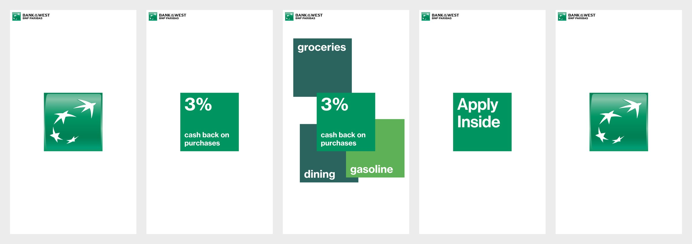
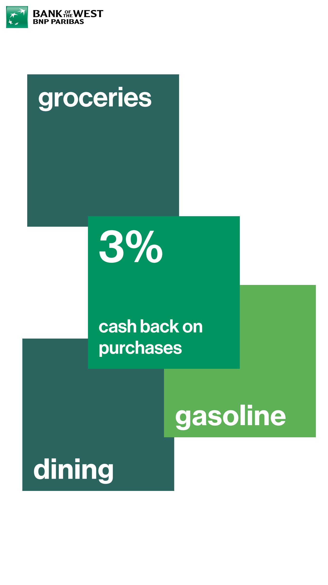
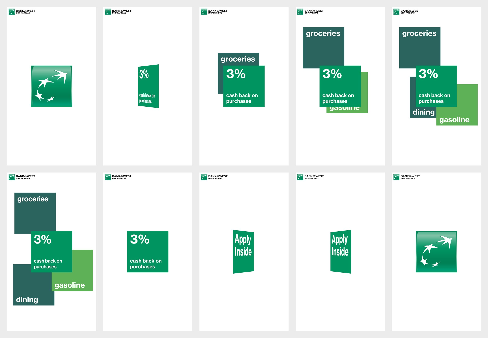

Bank of the West
A vertical animated ad for a Bank of the West (BNP Paribas) cash-back card, designed and animated in partnership with Landor.

The problem
The files show a short portrait-format piece for Bank of the West: introduce the BNP Paribas mark, state a 3% cash-back offer on groceries, dining and gasoline, and close on a call to apply.
The approach
The piece is built entirely from the brand's green square. The BNP Paribas mark turns on its axis and becomes a flat green tile carrying the "3% cash back on purchases" message; darker and lighter green tiles for groceries, gasoline and dining then stack around it before collapsing back to a single square.
That square flips again to reveal "Apply Inside" and resolves on the mark. The studio worked it out as a 20-frame sequence in Illustrator before animating it in After Effects, keeping the Bank of the West lockup fixed in the corner throughout.


Leadership
Directed agency:collective's design and animation of the piece for Landor.